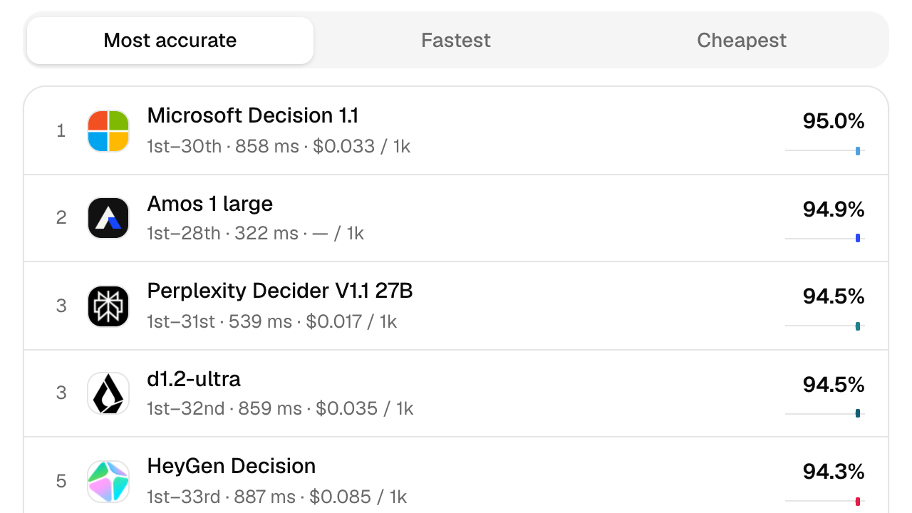
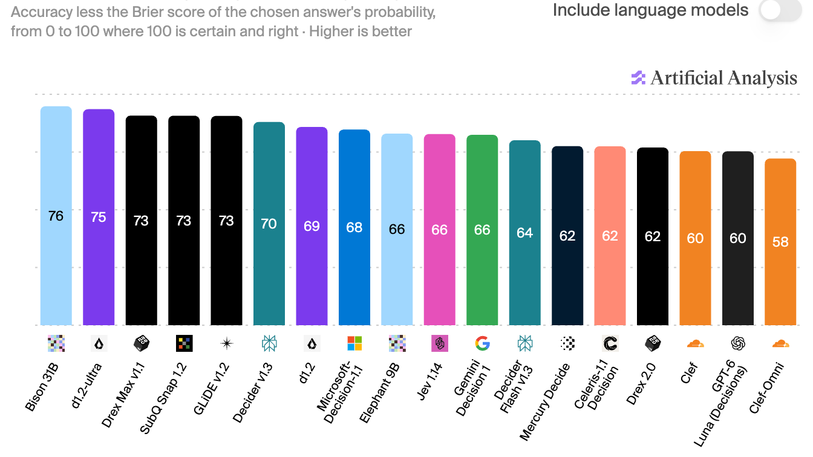
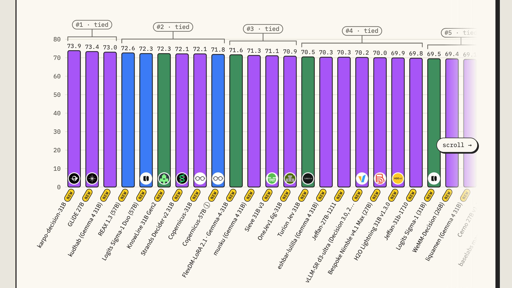
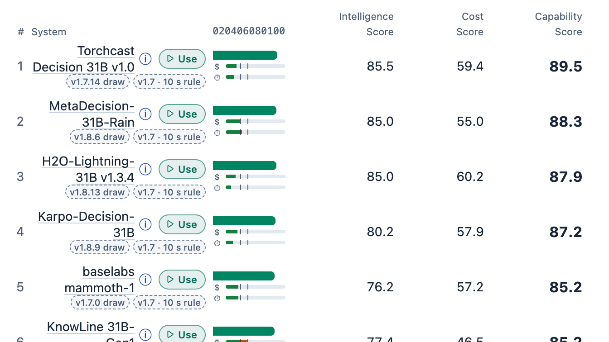
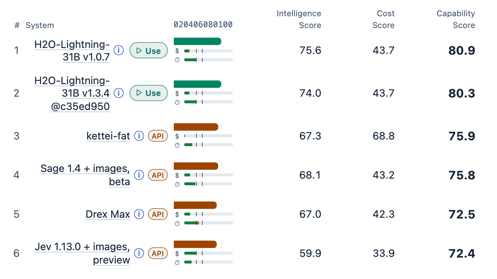
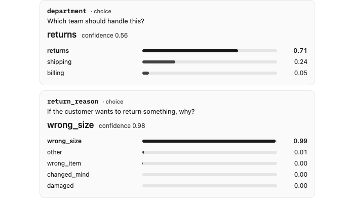
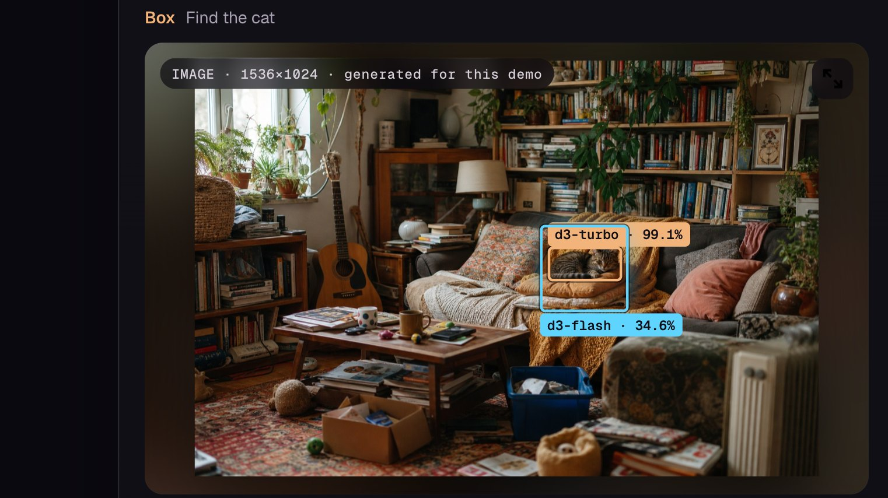
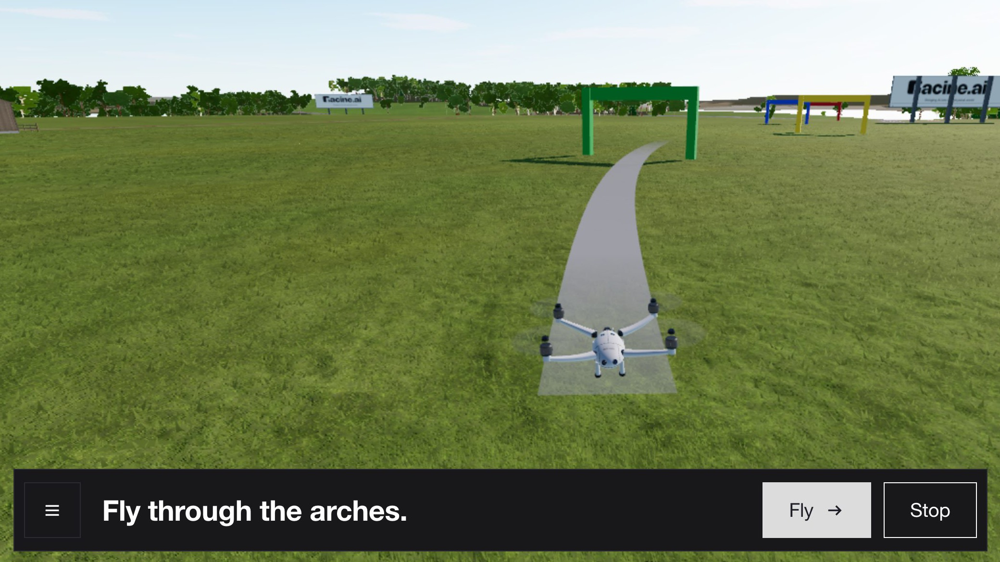

Where to start: papers we suggest
The Hitchhiker’s Guide to System 1 Models: Fast Decision-Making Beyond LLMs
Haggai Roitman
arXiv preprint, Oct 2026, v2 · PDF
A survey written for practitioners.
Five model families: encoder classifiers, reward models, non-autoregressive decision engines, contrastive decision models and extraction models. Calibration is a central theme (RLCD, IIA violations, ordinal-scale bias). 18 application domains, 190 references.
arXiv 2610.33775v2, abstract
Evaluating and Benchmarking the System One Model Jev
Tobias Deußer et al., University of Bonn, Lamarr Institute
An independent test of Jev on 37 datasets.
Read out without tuning, Jev and Qwen3.8-27B have similar calibration error over 33 datasets: 7.4 and 7.5 points. As an agent, Jev completes 35% of unseen ALFWorld tasks; Qwen, 54.5%.
arXiv 2609.37647v2, §4.3, §5.4
Jeva: System One Models from First Principles
Qi Li, Xinchao Wang, National University of Singapore
arXiv preprint, Oct 2026, v2 · PDF · code · project · weights
Encodes request and options separately, so options can be cached.
A coverage estimate answers “none” when no option fits, and no decision flipped under any option order tested. Scored up to 2,048 options at once. Trained on labels plus filtered teacher distillation.
arXiv 2610.18773v2, §4.1, §4.3, App. C.1
Releasing the Inner Jev: A Simple Recipe for Open Decision Models
Jonathan Geuter, Andrew Cheng, David Alvarez-Melis, Harvard University, Kempner Institute
Reads option-letter probabilities from an open LLM, then fine-tunes it.
On JevBench’s 231 public items, Jeff-1.1-Large answers 93.1% correctly; Jev 1.13, 86.6%. LoRA fine-tuning of four open LLMs from 4B to 31B; models, code and training data released.
arXiv 2610.17205v2, §5.1, Table 3
LLM-as-Jev: LLMs Are Already Jev-Style Decision Models — When and How to Fine-Tune Them
Yinheng Li, Justin Wagle
arXiv preprint, Oct 2026, v3 · PDF
Reads a decision from any LLM without training, with no option cap.
Numbered options are read through a prefix-free trie, so the option count is unbounded. Optional fine-tuning adds KL anchors that keep the model’s text generation intact. The paper links no code of its own.
arXiv 2610.02076v3, §3.2, §3.4
StartLux-Decision: AutoThink Decision Models with Reinforcement Learning for Calibrated Deliberative Decisions
Xialie Zhuang et al., StartLux, University of Hong Kong, SUSTech
Models from 0.8B to 27B, trained with RL to reason only when unsure.
A frozen model and proper scoring rules reward better decision probabilities, and overlong reasoning is penalised: up to 48 points more reasoning traces end within the length limit, and traces get up to 65% shorter. The repository has no RL training code (24 Nov).
arXiv 2610.17309v2, abstract
VideoJev: System One Model for Video Understanding and Interaction
Yuhan Zhu et al., Nanjing University and 7 more
Finds when an event happens: one probability per timestamp option.
Mean mIoU (overlap of predicted and true time spans) over Charades-STA, ActivityNet Captions and QVHighlights: 65.3 for the 4B model, 60.7 without its soft-IoU loss.
arXiv 2610.18615v1, Table 6
MetaEncoder: Exploring the Limit of Bi-Encoders for Multimodal System One Decision Making with Natural Language Interface
Jianpeng Cheng et al., Meta AI
A 30B decoder fine-tuned into a multimodal bi-encoder, so candidates can be cached.
Of three scorers built from one decoder, the cross-encoder, which reads request and candidate together, is the most accurate at every size; the bi-encoder keeps latency nearly flat as candidates grow.
arXiv 2610.11316v2, abstract
Visual Jev: Accurate and Efficient Decisions from Shared Visual Context
Guanxu Yu, Yuhang Yao, independent, Carnegie Mellon University
Encodes an image once and answers many choice questions over it.
At 32 questions per image, 5.6 ms per question instead of 20.5 ms for batched full sequences, on one RTX 5090. In a matched test the plain LM-head readout scored 0.889 macro accuracy, a new typed head 0.884.
arXiv 2609.25845v2, abstract, Table 3a
Taxonomy of architectures and training
Pick a group in any category to see how its papers are spread across the others.
Training59 papers
Trained on labelled decisions.
Cross-entropy, binary cross-entropy or log loss on the labels.
A teacher’s output distribution together with labels.
A Brier or other proper score is part of the loss and is differentiated exactly; no sampling.
Requests are matched to candidates with a contrastive loss.
A frozen model is read out without training.
A stage or loss term with sampled answers and a reward, on top of supervised training.
The reward is a proper score of the model’s own probabilities, as TypeSafe describes RLCD for Jev.
The reward is a task or episode outcome.
No human labels: the target is the output of the model itself or of a teacher.
The model learns a teacher’s or its own answer distribution; no labels are used.
Calibration59 papers
Reinforcement learning for calibrated decisions: the reward is a proper score of the model’s own probabilities. Jev’s stated method, and its open variants.
A proper score or a calibration objective in the training loss, without reinforcement learning.
A temperature, Platt scaling or a label-prior correction fitted after training.
No step aimed at calibration.
- Adaptive Computation
- AffordJEV
- AgriJev
- Decision 1.0
- DecisionRank
- Drex
- EgoJev
- EO-Jev
- Every Pixel Is an Option
- FunDM
- GLiDE
- JevNavAgent
- LLM-as-Jev
- LoopSeek
- MetaEncoder
- MJev-Spatial
- OmniMed-Jev
- PathoJev
- PixelOne
- Prism-1
- Reducing Order Sensitivity
- ReListen
- RSAJEV
- Runoff
- Selective Reasoning
- StreamingJev
- The Value of Thinking
- UltraBERT-JEV
- Verdict-MQ
- VideoJev
- Visual Jev Rewards
- Zuse
Architecture59 papers
A decoder-only language model reads the request with the options.
- Adaptive Computation
- AffordJEV
- AgriJev
- AnyJev
- CAPS
- Chinese Decision
- Decision 1.0
- DecisionRank
- Drex
- EgoJev
- EO-Jev
- Every Pixel Is an Option
- FunDM
- GLiDE
- IJev
- Intern-Decision
- JEV-VAD
- JevNavAgent
- LEV
- LLM-as-Jev
- LoopSeek
- MJev-Spatial
- Omni-JEV
- OmniMed-Jev
- PathJev
- PathoJev
- PixelJev
- PixelOne
- PRDO
- Prism-1
- Qwen-Audio-Jev
- Reducing Order Sensitivity
- Releasing the Inner Jev
- ReListen
- RoboJev
- RSAJEV
- Runoff
- SanSi
- Selective Reasoning
- Small Heads, Strong Decisions
- StartLux-Decision
- StreamingJev
- System X
- The Value of Thinking
- ThinkJev
- UniJev
- VideoJev
- Visual Jev
- Visual Jev Rewards
- Zuse
One BERT-style encoder reads the request and the options together; no generative model.
The request and each option are encoded separately and then compared, so option encodings can be cached and reused.
A frozen speech encoder with a cross-attention scorer.
Prediction head59 papers
No new head: the model’s own text head. The probability of each option’s token is read from its next-token distribution.
A decision state is compared with each option’s state; the score is their cosine or dot product (a pointer head).
A new linear or MLP layer maps a hidden state to option scores.
Bilinear or attention scorers, generated labels, or a head the paper does not specify.
Base model59 papers
A decoder language model.
Qwen3, Qwen3.5, Qwen3.6 or Qwen3.8, alone or beside other models.
- Adaptive Computation
- AffordJEV
- AgriJev
- AnyJev
- CAPS
- Chinese Decision
- Decision 1.0
- DecisionRank
- Drex
- EgoJev
- EO-Jev
- Every Pixel Is an Option
- FunDM
- GLiDE
- IJev
- Intern-Decision
- JEV-VAD
- Jeva
- JevNavAgent
- LLM-as-Jev
- LoopSeek
- Marimba
- MJev-Spatial
- Omni-JEV
- PathoJev
- PixelJev
- PixelOne
- PRDO
- Prism-1
- Qwen-Audio-Jev
- Reducing Order Sensitivity
- Releasing the Inner Jev
- ReListen
- RoboJev
- RSAJEV
- Runoff
- Selective Reasoning
- Small Heads, Strong Decisions
- StartLux-Decision
- StreamingJev
- System X
- The Value of Thinking
- ThinkJev
- UniJev
- VideoJev
- Visual Jev
- Visual Jev Rewards
- Zuse
Gemma or MedGemma.
Ouro looped language models or the Muse-Glimmer decoder.
A bidirectional encoder.
ModernBERT, base or large.
mmBERT, UltraBERT or sentence encoders.
Architecture size59 papers
Parameters of the largest model in the paper.
Parameters of the largest model in the paper.
Parameters of the largest model in the paper.
Parameters of the largest model in the paper.
Modalities59 papers
The model reads text only.
- Adaptive Computation
- AgriJev
- AnyJev
- Beveridge
- CAPS
- Chinese Decision
- Chinese-Jev
- Decision 1.0
- DecisionRank
- From Retrieval to Typed Decisions
- FunDM
- GLiDE
- IJev
- Jeva
- LEV
- PRDO
- Prism-1
- Reducing Order Sensitivity
- Releasing the Inner Jev
- RELOAD
- Runoff
- SanSi
- Selective Reasoning
- Small Heads, Strong Decisions
- System X
- The Value of Thinking
- ThinkJev
- UltraBERT-JEV
- Verdict-MQ
- Zuse
Text and images, no video.
Video, with or without still images.
Speech or other audio.
Measured effects
Reordering the options changes some answers, in hosted Jev and in open models.7 sources
Answers that change when the options are shuffled (%)- Consider, Then Choose (Runoff) v1. Shuffling changed 5.3% of Jev 1.13’s answers, averaged over five benchmarks with 3 to 20 options (Table 2).
- Prism-1 v2. One shuffle changed 20.0% of Qwen3-8B’s and 11.9% of Gemma 4 12B’s answers on five benchmark sets; a published decision fine-tune of Gemma 4 12B still changed 9.1%.
- Zuse v1. Reversing the option order flipped 5.6% of answers at 27B and 8.9% at 4B (Table 5).
- Reducing Order Sensitivity v1. Found order sensitivity in all ten open and closed decision models it tested.
- Visual Jev v2. Reordering changed 17% of accept-or-review decisions on SNLI-VE.
- Does Structure Reduce Selection Bias? v3. Over eight orders Jev’s accuracy varied by under 2 points, but the set of questions it failed at least once grew by 27.3% (Jev 1.13) and 28.5% (Jev 1.14).
- Joint or Per-Option? v1. Reordering changed 12–23% of the answers of encoders that read all options together, and none for encoders that score each option alone.
On the other side
- Reducing Order Sensitivity v1. Reading the options as parallel branches of one context (tree attention) removed the effect, at a cost of 1.1 accuracy points when applied without retraining. Runoff and Prism-1 also report no changed answers by construction.
The longer the option list, the more the answer depends on its order and on which options it includes.5 sources
Average minus worst-case accuracy over orderings of the options (points)- Average accuracy is the usual score, averaged over the orderings tried. Worst-case accuracy counts a question as right only if every ordering gets it right.
- Reducing Order Sensitivity v1. On CLINC150, the gap was 0.5 points for hosted Jev with 4 options and 17.0 with all 151; for the OpenAI Decisions API, 2.1 and 47.8 (Table 6).
- Irrelevant Alternatives v1. Pre-registered, 299,463 calls to Jev 1.13: every added option shifted the log-odds between the right label and the strongest wrong one, by 0.20–0.52 nats root mean square, and by about 1 nat at 255 options.
- Prism-1 v2. A well-chosen added option steered 4–34% of single-choice decisions.
On the other side
- What Can’t Jev Decide? v1. On a lookup task where one record matches, Jev selected without error up to 64 options and 20k tokens.
- Evaluating Jev v2. With the 151 options of CLINC150, Jev’s calibration error was 2.5 points (Table 11).
The backbone decides accuracy. The head on top of it barely matters.4 sources
Accuracy change from a different head or backbone (points)- Small Heads, Strong Decisions v4. Five heads trained on Qwen3-0.6B with the same data, recipe and seed reached 81.3–82.0% in-domain; a 27M-parameter head scored 0.1 below a 0.5M-parameter one. Moving the backbone from Qwen3-0.6B to Qwen3-4B raised held-out accuracy from 78.0% to 88.9% (Table 7).
- Releasing the Inner Jev v2. On Gemma 4 31B, training the head alone on a frozen backbone gave 78.9; LoRA on the backbone with the head frozen gave 84.9 (Table 5). An order-invariant encoding and a set layer over the options brought no measured gain (−1.9 and −2.3, ± 3.8; Table 16).
- Visual Jev v2. A typed head scored 0.884 against 0.889 for reading the language-model head; supervised training of the model raised macro accuracy from 83.4% to 88.5%.
On the other side
- StartLux-Decision v2. Reports that bidirectional attention over the prompt improved its score at four of five model sizes, by up to 2.4 points; Small Heads found the same change lowered accuracy by 3.5–6.0 points on its recipe.
Open models now match or pass hosted Jev on the benchmarks their authors report.7 sources
Score on each study’s own benchmark (out of 100)- Releasing the Inner Jev v2. Jeff-1.1-Large (Gemma 4 31B, supervised) 88.2% against Jev 1.13’s 88.0% over seven held-out datasets, with a calibration error of 6.2 against 6.6 points (Table 4).
- General Decision Models v2. SII-Decision-27B 79.24% against Jev’s 78.38%, with a calibration error of 1.5 against 5.3 points (Table 1).
- The Value of Thinking v1. HDM-4B 0.857 against Jev’s 0.851 on JevBench, at a median 0.179 s against 0.652 s.
- Drex v3. Drex Max 67.52 against Jev 1.14’s 60.70 on the public suite of Decision Index 0.4.1.
- Visual Jev v2. Macro accuracy 2.77 points above the hosted Jev API on four image benchmarks.
- Evaluating Jev v2. A zero-shot readout of Qwen3.8-27B was on par with Jev in calibration over 33 datasets (7.5 against 7.4 points).
- SO-Arena v1. On a third-party board, the top open System One model scored 70.2 and the Jev API 60.4.
On the other side
- All but SO-Arena and Evaluating Jev are reported by the open models’ own authors, and most Jev numbers are for version 1.13.
One pass matches a fast LLM on many decisions. Where steps are needed, reasoning still wins, at a price.8 sources
Score on each study’s own benchmark (out of 100)- System1-Arena v1. 92k questions, 30 models: the largest System One models matched or exceeded fast closed LLMs in non-agentic accuracy, with better-calibrated probabilities at a quarter of the latency; a reasoning LLM was the most accurate, at about 70 times the cost of a fast LLM.
- What Can’t Jev Decide? v1. Jev answered 97.5% of the items that one forward pass of a reference LLM solves, and 74% of the others.
- SO-Arena v1. The top System One model scored 70.2; the System Two reference, GPT-6 Sol, 82.3.
- Decision Models for Text Annotation v2. On 18 social-science annotation tasks, Jev trailed the strongest LLM per task on 14 of 15, by a median 11.6 macro-F1 points, at a median 44 times lower cost.
- StartLux-Decision docs. 84.66% when the model may reason on uncertain questions, 78.53% answering in one pass (27B, 51,506 questions; self-reported).
- LEV v1. Looping the layers instead of writing text: 63.2% at depth one, 76.2% at depth four on JevBench.
- Do We Still Need Fine-Tuned Classifiers? v1. Zero-shot, Jev replaced the trained predictor of a published paper on 12 of 46 test sets.
On the other side
- S1Arena-MM v1. On image, video and audio decisions, MLLMs given up to 2,048 thought tokens passed the top System One models only slightly, and thinking worsened the probabilities of most of them.
Criticism of calibration claims
Decision models are calibrated on average, not task by task.5 sources
Calibration error (the gap between confidence and accuracy, in points)- Just Ask Jev v1. Jev’s probabilities were calibrated when pooled (4.7 points) but not within a benchmark: the median per-benchmark error was 16.8 against 7.4 under perfect calibration, and 24 of 31 benchmarks exceeded that null (§4.4).
- Evaluating Jev v2. Pooled over 22 datasets, Jev’s confidence was within 2.8 points of its accuracy; on emotion classification it was off by 28 (Table 11).
- Recalibrating a Typed-Decision Model in an Afternoon v1. Laya’s released checkpoint: 7.3 points pooled, 14.3 averaged over question type and option count; the 12-option questions were over-confident by 22 points and the 3-to-5-option ones under-confident by 5, and they cancel (synthetic, LLM-labelled items).
- Zuse v1. 1.6 points pooled, 3.5 weighted per source; knowledge tasks were over-confident and acceptability judgements under-confident at all three sizes, “so one fitted temperature cannot correct both”.
- TypeSafe docs. TypeSafe’s own documentation: its rates “describe groups of predictions, not a guarantee about any single answer”.
Calibration measured on clean English questions does not carry over to agents, attacks or other languages.6 sources
Calibration error (the gap between confidence and accuracy, in points)- Evaluating Jev v2. Jev’s error was 2.8 points pooled over single questions and 24.7 when it chose the actions of an agent on ALFWorld (§5.4).
- Too Fast to Doubt? v1. Over four hosted decision models on 1,440 synthetic browser tasks, the mean error rose from 2.6 points on clean pages to 36.7 when a false conclusion was planted in a page comment.
- One Confidence Threshold, Unequal Coverage v1. With one threshold of 0.9, three vendors’ decision APIs accepted the English version of a correctly answered request 8.6–11.7 points more often than the same request in 50 other languages.
- Confidence Is Not a Promise. Calibrated in English, Jev kept a promised 95% accuracy in 8 of 51 locales.
- XDecideBench v2. A threshold fitted on English for 5% errors gave a higher error rate on XNLI, even in German and French.
- Visual Jev v2. Fixed confidence thresholds exceeded their target error rates on held-out images.
Where annotators disagree, the model’s confidence runs ahead of their agreement.5 sources
On the items people disagree on most (%)- Khosla, pre-registered test. On the 750 most contested ChaosNLI items, Jev’s mean confidence was 81% while 47% of annotators chose its answer; a supervised NLI classifier showed the same gap.
- Decision Models for Text Annotation v2. On empathy in peer-support dialogues, Jev reported high confidence while performing near chance.
- When Multiple Choices Are Correct v1. When several options were correct, at least one correct option received less than 1/n of the probability in 28–50% of lists (Jev, Liquid d1, GPT-6 Luna Decisions).
- OpenJev-RLCD v1. Training with calibration rewards did not beat plain cross-entropy when the uncertainty lay in the labels themselves (ChaosNLI, §5.3).
On the other side
- What a Calibrated Probability Hides (BGPO) v1. An RL method that uses annotator labels in training reports the lowest divergence from human answer distributions on opinion questions (0.027, against 0.048 for supervised training and 0.118 for Jev zero-shot).
RLCD, Jev’s stated training method, is unpublished. With labels, supervised training calibrates as well in most matched tests.7 sources
Calibration error (the gap between confidence and accuracy, in points)- UniJev v1. From one supervised 2B model, on text: supervised training 4.2 points, reward-shaped RLCD 22.0, GRPO 23.4, calibrate-then-reinforce 9.5 (Table 2, one seed). The authors write that the existing RLCD algorithms give no consistent calibration benefit over supervised training.
- StartLux-Decision v2. An exact objective lowered the error from 5.1 to 3.9 points; sampled-answer policy gradients gave no calibration improvement (5.3; App. B.4). After temperature scaling, its models with and without the RL stage were “comparable at 3.1 and 3.2 points”.
- Releasing the Inner Jev v2. Gemma 4 31B trained with cross-entropy and one temperature per question type, no RL: 6.2 points against 6.6 for Jev 1.13 over six held-out datasets (Table 4).
- Learning a calibrated decision head from logged bandit feedback v1. With full labels, none of four bandit-style arms beat cross-entropy plus one temperature over four unseen label sets (three seeds); used as a REINFORCE reward, a proper score collapsed one run (accuracy 0.636 → 0.111).
- OpenJev-RLCD v1. States that RLCD with an explicit answer distribution has the same expected gradient as the Brier loss, and that it never beat cross-entropy (§5.4).
- laya-vision, pull request 1. Measured a cosine of 0.997 between the RL gradient and the cross-entropy gradient.
On the other side
- Drex v3. Its RL stage added 2.0 Decision Index points and 1.5 accuracy points over the supervised-only checkpoint of the same run, and lowered calibration error by 0.9 points (Table 7).
Re-fitting the probabilities on your own labels still helps, Jev included.5 sources
Calibration error (the gap between confidence and accuracy, in points)- Police crash narratives v1. Platt scaling fitted on half of 2,416 human judgements and scored on the other half took Jev’s error from 2.3 to 0.7 points (Table 6).
- Recalibrating a Typed-Decision Model in an Afternoon v1. One temperature per question type and option count took Laya’s per-task error from 14.3 to 7.3 points (9.9 with a whole evaluation set held out); one global temperature made the pooled error worse (7.3 → 17.3).
- Releasing the Inner Jev v2. The temperature fitted to Jev 1.13’s yes/no answers was 0.69: below 1, so slightly too cautious (Table 20).
- Zuse v1. Over- and under-confident tasks coexist, so one temperature for the whole model cannot correct both.
- Confidence Is Not a Promise. Across 190 evaluations, a threshold chosen from a point estimate broke its accuracy promise in 147; a threshold with a statistical lower bound (Learn then Test) in none.
RL has helped where the model reasons before it answers, or where only outcomes are logged.5 sources
Questions the model can answer with ≥ 80% accuracy, taken in decreasing order of confidence (%)- OpenJev-RLCD v2 (PRDO). Scoring the answer distribution read after each sampled rationale: Taking its most confident answers first, the model could answer 27.8% of MMLU-Pro questions with ≥ 80% accuracy, against 19.8% for direct-answer supervised training and 0.5% for GRPO, each with a fitted temperature (three seeds; the cut-off is set on test labels). A second stage that also reinforced the rationales gave no detectable improvement.
- OpenJev-RLCD v1. On checking answers to maths problems, it could decide 81.1% of items and stay 95% accurate, passing on the rest, against 19.4% for GRPO (Table 1, three seeds).
- Drex v3. RL after supervised training added 2.0 Decision Index points on Drex Max (Table 7).
- Learning a calibrated decision head from logged bandit feedback v1. From logged outcomes alone, scoring the chosen option’s probability with a proper loss beat fine-tuning on confirmed answers (Banking77: +2.6 accuracy points, 0.053 lower calibration error).
- StartLux-Decision v2. Its RL stage mainly taught the model when to stop reasoning: at 9B, finished traces rose from 45.9% to 93.9% and mean length fell from 2,494 to 868 tokens.
Open-source implementations
- OwnerRepositoryDescriptionSizesModalitiesStarsLinks
- NandhaKishorMlayaDecision engine; since v0.5 a frozen 0.8B reader with a small head.150M–27B35,949
- jaredpalmerkevLoRA plus a pointer head on Qwen, with a server, tests and a fine-tuning recipe.0.8–27B10,107
- vllm-projectsemantic-routerRouter project that serves the Decision 3.0 (d3) model packages.0.6–26B6,527
- TheoLeeCJSemIf-OpenJevOption-logit readout on a frozen 4B model; no training.4,980
- Contrastive-LMCLMTwo-tower contrastive state and action encoders.8B3,219
- TianyuCodingsNanoJevQwen3-0.6B decision heads trained on game decisions (Maze, Snake, ViZDoom).0.6B2,605
- fastino-aiGLiNER2Schema-conditioned encoder for extraction and classification (the GLiNER2.5-Decide checkpoints).74M–340M2,502
- StartLuxLabsStartLux-DecisionDecision models with a bidirectional prompt and optional reasoning.0.8–35B1,793
- nokia-applied-researchAnyJevLetter readout averaged over option rotations; Tacit self-distilled models.1.7–31B1,640
- vinnylarougejevlikeMinimal scorer: each option attends over the text; Doom and chess examples.1,372
- MapikadeciderLetter readout on Qwen and Gemma models, with a temperature per option count.0.8–31B1,034
- Valen-TeamValenQwen3.5 decision models with a box head.0.8–27B936
- wfzyxvonModernBERT decision encoder, CPU-served. Archived.395M919
- InternLMIntern-DecisionOne placeholder per JSON field, on Qwen3.5.0.8–4B820
- Zefan-CaiOpen-JevOne yes/no score per candidate on Qwen.2–27B454
- malevrignsagent-jevQwen3-0.6B with a permutation-equivariant set head, for agent loops.0.6B370
- MCG-NJUVideoJevTemporal grounding and video question answering by candidate scoring.4–35B318
- OmniJevOneJevMultimodal decision models for screens, photos, video and text.0.8–27B286
- zfkarlMedJevQwen3.5-4B medical image decisions with a query–key readout.4B285
- togethercomputertev1Letter fine-tuning recipe on Together AI (Qwen3.5-4B).4B275
- LiQiiiiiJevaDecision model on an LLM encoder with a reusable option memory and a “none” gate.4B234
- tinnel123666888OmniJevQwen3.5 decision model for images, video, screens and robot scenes.0.8–4B178
- allebeejevk5Letter readout on Qwen3.5 with knockout rounds past 16 options.437M–9B169
- guanxuyu-svVisual-JevImage decisions on Qwen3-VL, with question branches over one image.4–8B58
- hotchpotchbekko-system-oneSmall encoders that run on CPU or in the browser.17M–400M43
- gulucaptainChinese-JevTraining, calibration and evaluation tools for Chinese decision models, with medical weights.30
- amazingljy1206SII-DecisionFirst-token readout with a self-distillation recipe.4–27B8
- Manavarya09verdictBi-encoder on a small sentence embedder, with a conformal “none”; runs in the browser.118M6
- lytang63OmniMed-JevMedGemma-4B with a shared decision scorer for medical images.4B4
- AgentBullbongardT5Gemma encoder–decoder judgment model.7.5B3
- Ujjawal-K-PanchalFunDMSmall head trained label-free on a frozen Qwen3-8B; the last 12 layers are skipped.0
- Cloudflareclef-omniCloudflare’s omni model with a joint schema head; weights and inference code only.30B
Leaderboard scores
- Decision Benchbench-v4 Single-choice questions built from real records in open datasets.

Data of 24 Nov 2026 · Decision Bench - Artificial Analysis Decision Indexv2.1 Documents, judgement, tool calls, knowledge, reasoning and answer stability.

Read 24 Nov 2026 · Artificial Analysis - Decision Index0.4.1 Private tests: the skills of public benchmarks, plus new domains.

Data of 21 Nov 2026 · Hugging Face Space - JevBenchv1.8.20 Open-weight models at up to twice Jev’s cost and latency.

Version of 22 Nov 2026 · Benchmark Heaven, JevBench - ImageJevBenchv0.3.0 Questions about images, under the same cost and latency limit.

Built 17 Nov 2026 · Benchmark Heaven, ImageJevBench


Demos to try

Kev
Jared Palmer · Kev-4B and Kev-0.8B
Write a message and a few typed questions: every option comes back with a probability.

Decision 3.0
vLLM Semantic Router
Ask choice, yes/no, score or box questions about text, your own images or a clip, and read the probability of every answer.
VideoJev
VideoJev-4B
Upload a clip and ask when something happens: you get a start and an end in seconds.

Jevol
Racine.ai · Jevol-0.6B
Write a mission such as “Fly through the arches” and a 0.6B model flies a simulated drone, answering three choice questions from the camera image every 0.4 s.
Open JevolChrome or Edge with WebGPU, about 570 MB
Speech to Decisions
IBM Granite · Granite Switch 4.1 8B
Talk, or play a recorded pizza order: one model transcribes, names the topic, runs three safety checks and answers ten yes/no questions.